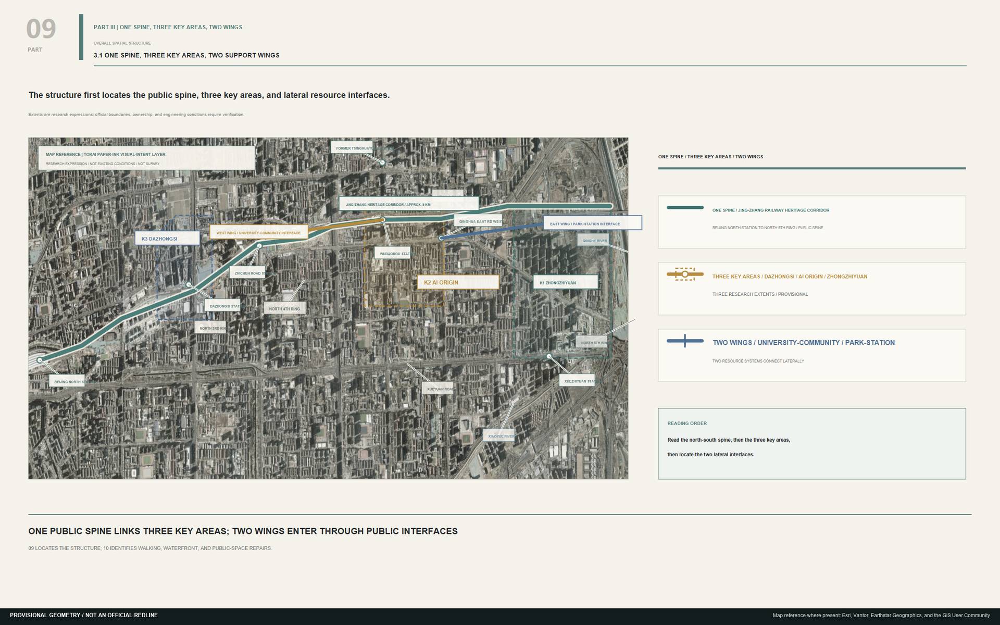
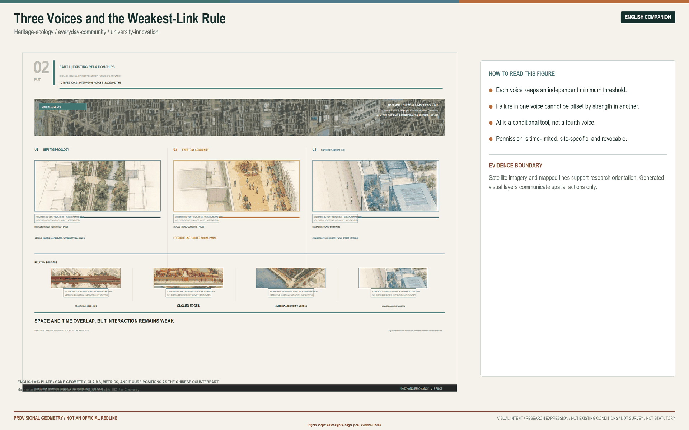
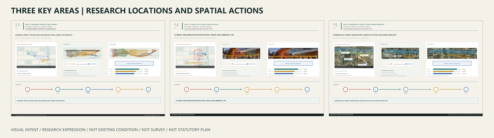
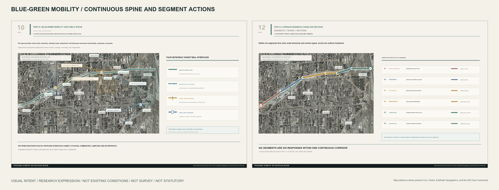
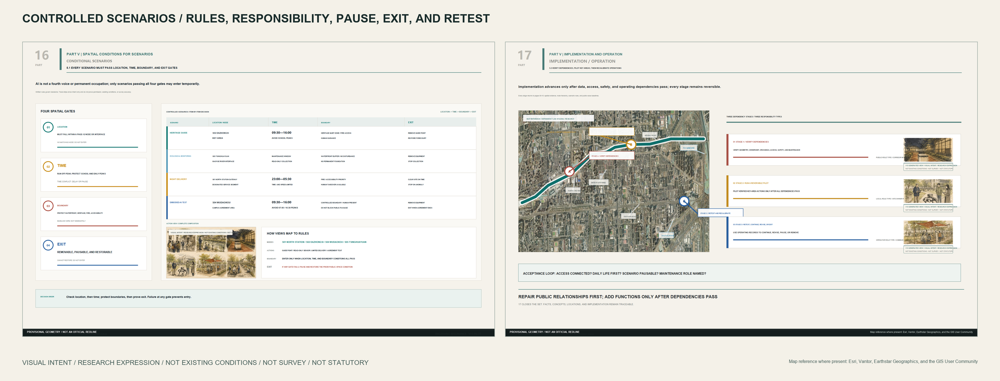

Participant-authored repair evidence only. This section does not issue maintainer scores, review decisions, admission, or publication authorization.
Evidence map
brief_alignment · compliance_matrix.json · design_depth_matrix.json · visual/assets/ai-review-layer.json
originality · visual/index.html · visual/index.en.html · visual/assets/ai-review-layer.json
ai_planning_innovation · compliance_matrix.json · design_depth_matrix.json · visual/assets/ai-review-layer.json
implementation_feasibility · visual/assets/bilingual-equivalence.json · visual/assets/final-render-qa.json · design_depth_matrix.json · visual/assets/ai-review-layer.json
public_interest_inclusion · visual/index.html · compliance_matrix.json · visual/assets/ai-review-layer.json
risk_compliance · visual/assets/asset-rights-ledger.json · visual/assets/asset-clearance-disposition.json · visual/assets/brand-model-provenance.json
expression_completeness · visual/assets/bilingual-equivalence.json · visual/assets/pdf-font-audit.json · visual/assets/final-render-qa.json
Participant repair records R01 · R02 · R03 · R04 · R05 · R06 · R07 · R08 · R09 · R10 · R11 · R12 · R13.
complete 13 · in_progress 0 · external_dependency 2 · not_started 0.
Participant follow-up record: F-20260825-01 open pending follow-up review. All thirteen participant-controlled repairs are complete. AR-010 page-13 tiled capture has been replaced with a participant-authored abstract base; retained Esri /export derivatives are recorded with the Master License Agreement, official static-publication and citation guidance, component mappings, and current provider credit. This package ships only attributed, annotated noncommercial static derivatives, not raw tiles or an offline basemap package. Sources: Esri, Vantor, Earthstar Geographics, and the GIS User Community. AR-013 is closed at 34 records / 22 unique blocks (32/20 Tokai plus 2/2 Oskyi). Tokai provider response IDs and provider-terms artifacts are absent and remain null; reproducible local run evidence and the participant's limited release scope are recorded. The current candidate still awaits maintainer re-review. Evidence: visual/assets/ai-review-layer.json · visual/assets/asset-rights-ledger.json · visual/assets/asset-clearance-disposition.json · visual/assets/brand-model-provenance.json · visual/assets/final-gates.json.
Formal geographic evidence is carried by the GeoJSON, metrics, sources, assumptions, and matrices. Current boundaries are provisional constraints. Generated visuals and research location diagrams do not prove existing conditions, scale, boundaries, survey accuracy, buildability, or approval.
Three independent voices
Railway heritage, engineering history, and public memory.
Walking, pausing, services, accessibility, and explainable technology.
Open source, controlled tests, translation, and trustworthy governance.
Weakest-link rule
Each voice keeps an independent minimum threshold. Failure in one voice cannot be offset by strength in another. AI is not a fourth voice and receives only time-limited, site-specific, and revocable permission.
Five core figures





AI scenarios
- 01Open-source results hall
- 02Model-safety governance sandbox
- 03Shared embodied-AI forecourt
- 04Enterprise-service agent counter
- 05Explainable walking navigation
- 06Accessible travel assistance
- 07Jing-Zhang memory guide
- 08Low-carbon operations dashboard
- 09Night-time micro-supply service
- 10Global AI Week route
Core metrics
Provisional site geometry
Research green ratio
Research public-space ratio
Task coverage and self-check
Task coverage is tracked in compliance_matrix.json, standard_matrix.json, and design_depth_matrix.json. Review status is recorded in self_check.json and the official validation output. Passing machine validation does not constitute planning, engineering, ownership, or government approval.
Sources and assumptions
See sources.json and assumptions.json. Official redlines, exact key-area polygons, survey, ownership, control-plan, road, waterfront, and engineering conditions remain outstanding.
Submission status
The GitHub submitter is confirmed as varliuvar. The AI model scope is declared in agent.json without inferring an unverified runtime sub-model. English proposal, HTML, five core figures, A3 booklet, A0 boards, and this visual index form the bilingual display set.